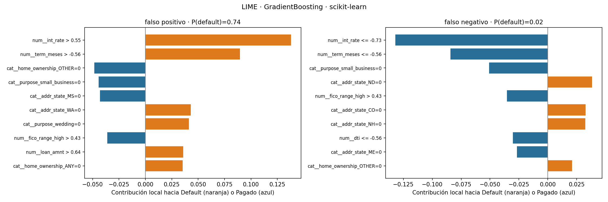
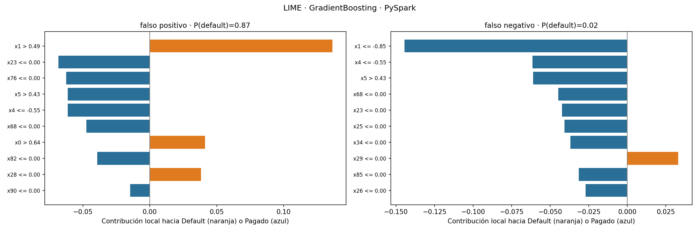

5. Interpretabilidad local con LIME#
Se explica el Gradient Boosting de cada entorno (el de mayor AUC probabilístico: 0.7179 en scikit-learn y 0.7174 en PySpark) en dos préstamos mal clasificados con alta seguridad: el falso positivo (predicho incumplimiento, pero se pagó) con mayor probabilidad y el falso negativo con menor probabilidad. Cada explicación usa 5,000 perturbaciones y 10 variables.
Resumen de costos y ajuste#
scikit-learn#

PySpark#

Qué variables pesan y qué significan#
Las reglas de LIME están en desviaciones estándar respecto al entrenamiento (por ejemplo, int_rate > 0.55 es una tasa más de media desviación por encima del promedio). Las variables one-hot aparecen como =0 (el préstamo no pertenece a esa categoría). Una barra naranja empuja la predicción hacia incumplimiento y una azul hacia pago.
Falso positivo en scikit-learn (P = 0.74, el préstamo se pagó). Lo empujan hacia incumplimiento una tasa de interés alta (int_rate > 0.55, la contribución mayor, cerca de +0.14) y un plazo largo (term_meses > -0.56, que equivale a 60 meses, +0.09). En sentido contrario actúan un FICO alto (fico_range_high > 0.43) y varias categorías que no aplican. El modelo lo leyó como riesgoso por precio y plazo, pero el puntaje crediticio alto y otros factores indicaban capacidad de pago.
Falso negativo en scikit-learn (P = 0.02, el préstamo no se pagó). Todo apuntaba a bajo riesgo: tasa baja (int_rate <= -0.73, la mayor contribución, cerca de −0.13), plazo corto de 36 meses, FICO alto y DTI bajo (dti <= -0.56). El préstamo incumplió a pesar de tener un perfil favorable, lo que indica que la causa fue algo que las variables disponibles no capturan (pérdida de empleo, un evento de salud, etc.).
En PySpark las variables salen como x0, x1, … porque el cuaderno no logró asignar nombres a las columnas: el vector de Spark tiene 99 columnas (las 91 de scikit-learn más dos casillas adicionales por cada una de las 4 variables categóricas, que Spark reserva para categorías no vistas por usar handleInvalid='keep') y el cuaderno esperaba 95, por lo que usó nombres genéricos. Las 17 numéricas ocupan las primeras posiciones del vector, así que se identifican por su orden y porque los umbrales coinciden con los de scikit-learn: x0 = loan_amnt, x1 = int_rate, x4 = dti y x5 = fico_range_high (en ambos entornos, fico_range_high > 0.43). Las demás (x23, x25, x26, x28, x29, x34, x68, x76, x82, x85, x90) son categorías one-hot cuyo nombre exacto no se pudo recuperar, y por eso no se interpretan.
En el falso positivo de PySpark (P = 0.87) la tasa de interés alta (
x1 > 0.49, cerca de +0.14) y un monto alto (x0 > 0.64) empujan hacia incumplimiento; un DTI bajo y un FICO alto empujan hacia pago.En el falso negativo de PySpark (P = 0.02) la tasa muy baja (
x1 <= -0.85, cerca de −0.145), el DTI bajo y el FICO alto empujan hacia pago.
Lectura conjunta. En los cuatro casos la variable dominante es la tasa de interés, seguida del FICO y del DTI (y del plazo en scikit-learn). Los dos entornos razonan de forma parecida, como es de esperar con AUC casi idénticos (0.7179 y 0.7174). Esto es coherente con la lógica del crédito: la tasa que asigna Lending Club ya resume su evaluación de riesgo. La comparación es de patrones, no del mismo préstamo: cada entorno explica su propia instancia con mayor probabilidad de error.
Qué aporta LIME y cuáles son sus límites#
Lo que aporta: los AUC dicen cuánto acierta cada entorno; LIME muestra por qué se equivoca en préstamos concretos y permite comprobar si dos modelos con AUC casi idéntico razonan de forma parecida.
Costo en el entorno distribuido: una explicación tarda unas 0.07 s en scikit-learn y unas 4 s en PySpark (aproximadamente 55 veces más). Cada llamada a la función de predicción lanza un trabajo de Spark con 5,000 perturbaciones. LIME corre en el driver; el clúster solo calcula probabilidades.
Los datos de fondo viajan al driver: aquí solo una muestra de 20 000 filas de entrenamiento y dos de prueba, nunca el dataset completo.
Fidelidad local moderada: el R² del modelo lineal local está entre 0.39 y 0.53. Un modelo lineal reproduce solo en parte el comportamiento del modelo de árboles en ese vecindario, por lo que las explicaciones son orientativas.
Estocástica y en unidades estandarizadas: las explicaciones cambian con la semilla (el cuaderno mide cuántas de las 5 variables principales se repiten) y las reglas están en desviaciones estándar del entrenamiento.
Variables correlacionadas y one-hot: la perturbación puede crear combinaciones poco realistas, y el efecto de variables muy correlacionadas (la tasa de interés con otras de riesgo) se reparte de forma arbitraria.
Para explicar muchas instancias en Spark habría que paralelizar las perturbaciones (por ejemplo con
mapInPandas) o usar métodos aproximados como SHAP.